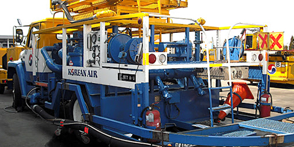
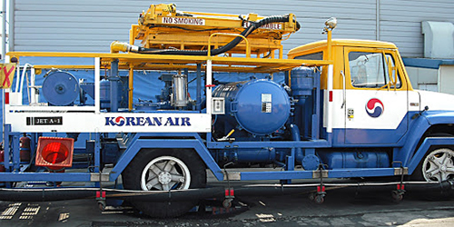
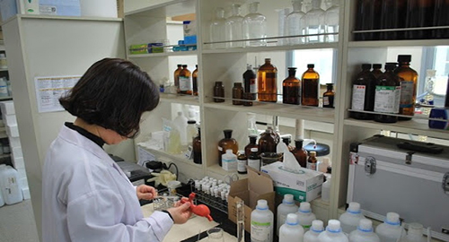
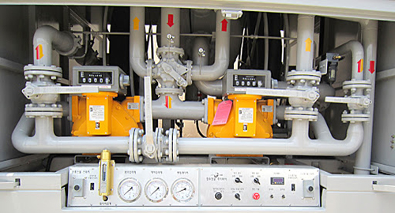
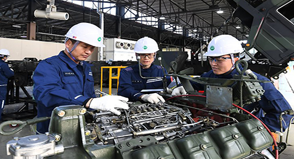
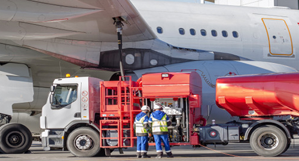
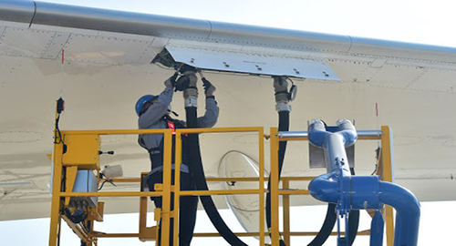

사업개요
한국공항국내 최초로 항공기 급유사업을 실시한 이래로
대한항공 및 50여개 외국 항공사에 급유 서비스를 제공하고 있습니다.
국제 표준에 맞는 급유장비와 숙련된 급유 조업원 노하루를 바탕으로 IATA에서 인증한 JIG(Joint Inspection Group)메뉴얼을 적용하여 세계 최상의 안전한 급유조업을 수행하고 있습니다
한국공항은 인천,김포,부산,제주,대구,양양에서 급유 조업을 수행하고 있으며, 국내 최대의 항공기 급유 조업사로서 최상의 급유 최대의 항공기 급유 서비스를 제공하기 위해 노력하겠습니다.
서비스소개
급유조업
- 항공기조업
- 한국항공은 공항 내 저장시설에 저장된 항공유를 하이드란트 급유 시설 및 급유장비를 이용하여 항공기에 공급하는 작업을 수행하고 있습니다.
- 한국공항의 급유조업은 JIG(Joint Inspection Group)에서 제작하고 IATA에서 인증한 'Guidelines for Aviation Procedures'를 기준으로 규정된 절차에 의한 표준화된 조업 서비스를 제공하고 있습니다.
항공유저장 시설운영
- 인천국제공항 급유시설 운영
- 인천공항내 핵심 기반 시설인 급유시설을 운영하고 있습니다.
| 지역 | 용량(BBL) | 기수 | TOTAL |
|---|---|---|---|
| 인천공항급유시설 | 100,000 | 12 | 120,000 |
- 항공유 입하/저장/출하
- 여과기를 통해 입하된 항공유를 자동제어시스템 및 하이드란트 설비를 통해 24시간 고속 급유서비스가 가능하도록 관리하고 있으며, 효율적인 항공유 입/출하,재고관리로 총120만 배럴의 저장탱크를 무중단 운영하고 있습니다.
- 항공유 품질관리
- 입하 저장 출하의 전 단계에서 완벽한 항공유 품질관리로 고품질의 항공유를 공급하고 있습니다.
- 보유실험장비
- 증류시험기,인화점 측정기,어는점 측정기,동판부식 측정기,색상측정기,전도도측정기 수분분리지수 측정기,배양기 등
- 급유시설 안전관리
- 대량 위험물 저장소인 급유시설은 PSM대상 사업장으로 철저한 안전관리를 통해 무사고 사업장을 유지하고 있습니다.
항공유 수송/판매
-

자가용 및 사업용 항공기를 보유하고 있는 관공서 또는 일반업체에 탱크로리(소형 급유차)를 이용하여 항공유를 수송,판매하고 있습니다.
-

하이드란트 시스템이 설치되지 않은 지선 공항(대구,양양공항)에서는 전용 급유장비(REFUELER)를 이용하여 연료를 항공기SPOT까지 운송,급유조업을 수행하고 있습니다.
품질관리
당사는 4개 공항(인천,김포,부산,제주)에 항공유 오염확인이 가능한 실험실을 갖추고 있으며 IATA 기준에 의거 항공사 및 고객사에게 그 결과를 제공하고 있습니다.
-

- 실험실 실험
- 증류실험
- 인화점
- 불순물 함양검사
- 색상검사
- 전기전도도 측정
- 비중 측정
- 미생물 실험
-

- 현장 품질관리
- 급유장비 sump연료 white Bucket Test 및 Drain
- Visual Check
- Water Check
- 하이드란트 연료 비중 Test
- 폭우,정비 시 추가 드레인 및 연료검사 실시
- 급유 장비 차압 및 필터 점검
- 필터 교환
급유정비
-

- 급유장비 정비
- 일 평균 50대의 정비 능력을 갖춘 자체 정비 Shop에서 IATA및
장비 제작사 지침에 따라 정비 수행
-

- 안전장치
- 인터락 system
- 인터락 Emergency Stop System
- Fuel Emergency Stop System
- Auto Sampler
- 여과기 Sump 드레인 장치
- 여과기 Air 제거 장치, 압력제거 장치
- 항공기 날개와 충돌방지를 위한 Wing protector System
- 데크 임의하강 방지 장치
안전/교육훈련
- 급유원 보수교육
- 신입 급유원 OJT실시
- 안전,보건,환경교육 실시
- 공항 내 출입 및 항공기 승기관련 보안교육
- 비상조치훈련:소방훈련 및 누유 발생시 조치 사항
- 급유원 기능교육(급유,배유절차 및 장비 작동방법, 비상조치방법 등)
- 신기종 Familiarization 교육